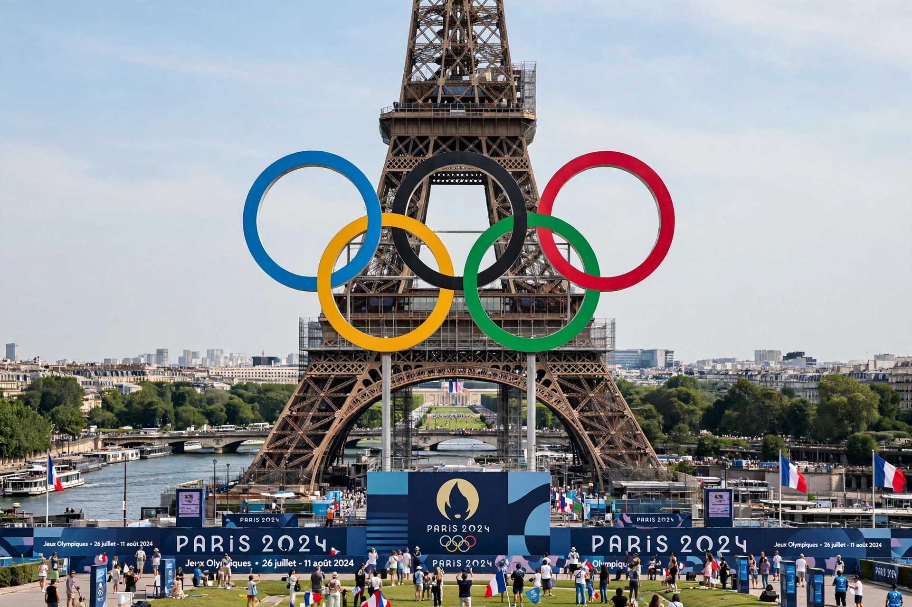

2024 Summer Olympics

| Host city | Paris, France |
|---|---|
| Motto | Games Wide Open |
| Nations | 206 (incl. refugee and neutral teams) |
| Athletes | 10,714 |
| Events | 329 in 32 sports |
| Opening | 26 July 2024 |
| Closing | 11 August 2024 |
| Stadium | Stade de France (athletics); Jardins du Trocadéro (opening ceremony) |
The 2024 Summer Olympics, officially the Games of the XXXIII Olympiad and branded as Paris 2024, were an international multi-sport event held from 26 July to 11 August 2024 in Paris, France. Paris became the second city, after London, to host the Summer Olympics three times, having previously hosted in 1900 and 1924.
The opening ceremony was the first in Olympic history held outside a stadium: delegations paraded by boat along a 6-kilometre stretch of the River Seine, watched by hundreds of thousands of spectators on the banks.
Sports programme
The programme featured 32 sports and 329 medal events. Breaking (breakdancing) made its Olympic debut, while skateboarding, sport climbing and surfing returned after their Tokyo debuts. Most venues were in Paris and its suburbs, with surfing held at Teahupo'o in Tahiti, French Polynesia.
Medal table
The United States and China each won 40 gold medals; the United States topped the table on total medals, 126 to China's 91. Host nation France finished fifth with 16 golds and 64 medals overall, its best performance in over a century. Botswana, Dominica, Guatemala and Saint Lucia won the first Olympic medals in their histories, and the Refugee Olympic Team won its first medal.
Legacy
The Games were notable for the use of existing and temporary venues, a swimming leg of the triathlon and marathon swimming held in a cleaned-up Seine, and near gender parity, with equal numbers of quota places for men and women.
See also: 2020 Summer Paralympics · International Olympic Committee